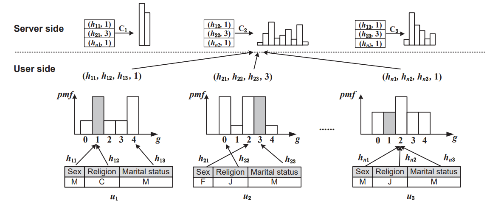
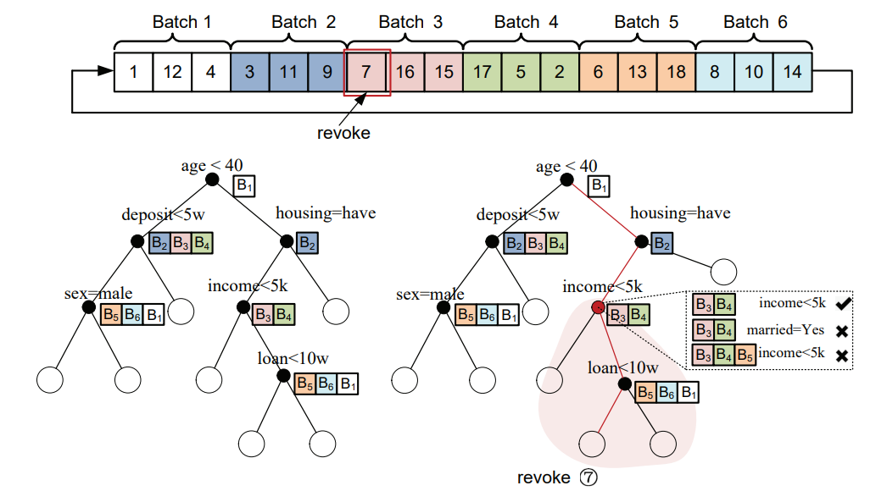

图可抽象物理世界中的各类实体及其之间的复杂关系，是计算机学科中最为重要的数据结构之一。 随着互联网、物联网和社交网络等技术的日益普及与快速发展，图的规模急剧增大。 动辄数十亿顶点和上千亿条边的大图，极大增加了PageRank计算和连通域发现等数据挖掘算法的 时空复杂度，对存储和处理效率的扩展性提出了前所未有的挑战。 当前，以谷歌公司和卡内基梅隆大学为代表的产业界与学术界均从分布式并行处理角度展开探索， 但仍存在大量未解决的扩展性问题。鉴于此，本课题组聚焦分布式大图处理，面向CPU和GPU等不同硬件设备， 从图划分、磁盘数据存储、通信管控和容错控制等角度展开深入研究， 相关成果已在ACM SIGMOD、IEEE TKDE、IEEE TPDS和ACM SoCC等国际顶级会议与期刊发表。
在数据与算力持续发展的背景下，机器学习/深度学习技术得到长足发展和广泛应用，人工智能时代已经来临。 然而，随着基于Transformer结构的ChatGPT等大模型的相继发布，样本数据与模型参数的规模呈现爆发式增长， TB级样本和千亿级参数已成为常态配置，这对长时序模型训练与推理的时效性提出了严峻挑战，亟需开发高效的 分布式/并行训练与推理系统。在已有TensorFlow和Pytorch的基础上，微软等IT巨头打造了DeepSpeed等开源 框架，但在同步协同控制、存储管控、收敛判据选择和数据流优化方面，仍存在巨大的提升空间。本课题组据此 展开研究，已在ACM SoCC和IEEE TPDS等国际顶级会议与期刊发表相关成果。
在大数据以及人工智能时代，机器学习/深度学习需要使用大量的个体样本数据进行训练。由于模型参数包含个体用户数据的印记， 直接发布参数结果会造成隐私泄露。如何在使用用户数据的同时保证其数据信息不被泄露成为当前的研究热点。 差分隐私技术作为当前最先进的隐私保护技术之一，引起了学术界以及以苹果、谷歌、阿里等代表的工业界的广泛关注。 一些产品例如Apple IOS、mac OS、Google Chrome均使用差分隐私保证用户数据在收集过程中的安全。尽管如此， 在不同学习或发布任务下，差分隐私领域仍存在大量未解决的问题。鉴于此，本课题组从联邦学习，空间数据发布以及 投毒攻击等不同的应用背景出发，展开高效用的差分隐私数据发布方案的研究，相关成果多次发表于CCF-A类国际会议。
机器/深度学习模型训练的本质是通过迭代更新参数使其能够拟合所有样本数据的特征，其模型参数显然会包含个体样本的印记， 也即存在暴露个体用户隐私信息的风险。出于隐私泄露的担忧或商业保密约束，当部分样本提供者提交数据撤销请求时， 需同步从参数中抹除其信息印记，这促使产生新的隐私保护范式—机器遗忘学习。删除数据后重新训练模型，是机器遗忘学习的最直接的方式， 然而受模型结构以及训练数据规模的影响，重训练开销极大，对每一次遗忘请求进行模型重训练是不现实的。 鉴于此，谷歌、哈佛以及斯坦福等机构针对机器遗忘学习展开研究。作为一项新兴技术，其仍然存在巨大提升空间。 本课题组从训练数据的组织，模型的结构设计、多遗忘请求计算共享、训练中间的信息优化等角度进行研究， 开发高效用的机器遗忘学习技术，多篇论文投稿于国际会议。
